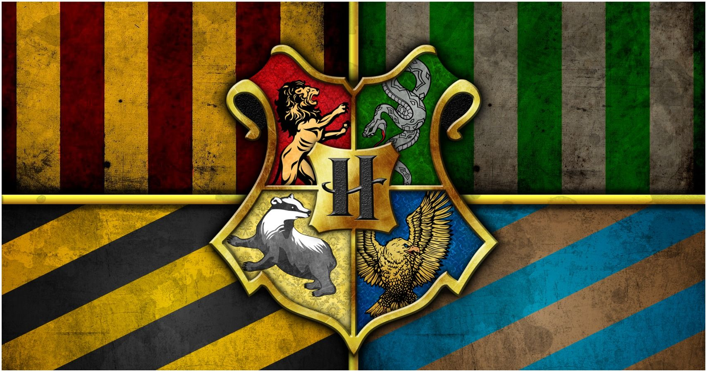
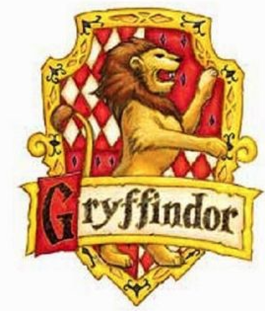
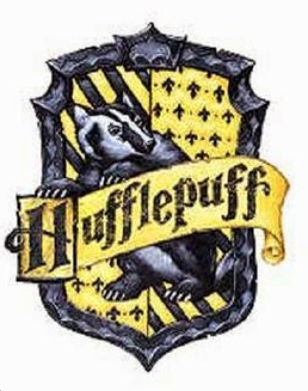
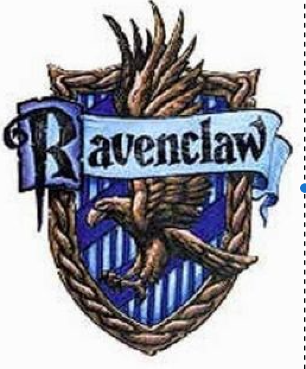
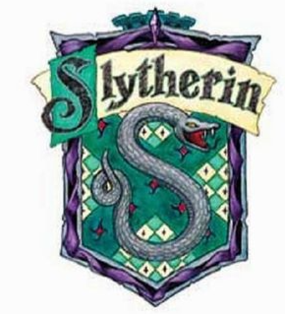

The Four Houses of Hogwarts
There are four houses in Hogwarts School of Wizardry. The houses are place meant for living and learning. And each House has a way of winning or losing points which at the end of the year gives them a chance to win the House Cup.
The four founders of Hogwarts would hand pick students when they were alive, but feared what they would do after their inevitable deaths. So Godric Gryffindor created the sorting hat. So every year at the very beginning the new students would be apart of a Sorting Ceremony. The sorting hat is placed on their head and tells which house each student will be apart of for the next four years.
Each house has its own space in the castle located at various areas. Each one containing a common room and the dormitory. Where students spend most of their time with their own housemates. Each house also has its own table in the Great Hall. And the students interact with their own House mainly, but classes are with other Houses and they are allowed to interact with anyone they want to. Most stick to who is in their own House though.
Gryffindor
Gryffindors value bravery, daring, nerve and chilvrey. Its emblematic animal is the lion, and the color scheme is scarlet and gold. The Head of House currently is Minerva McGonagail. The House Ghost is Sir Nicholas de Mimsy-Porpington, also known as Nearly Headless Nick. Godric Gryffindor is the founder of this house. The element for this house is fire.

Hufflepuff
Hufflepuff values hard work, dedication, patience, loyalty, and fair play. Its emblematic animal is the badger, and the color scheme is yellow and black. The current Head of House is unknown, with the last one being Professor Sprout having left the post in 2017. The House Ghost is the Fat Friar. Helga Hufflepuff is the founder of this house. The element for this hosue is earth.

Ravenclaw
Ravenclaw values intelligence, knowledge, curiosity, creativity and wit. Its emblematic animal is the eagle, and the color scheme is blue and bronze. The most recent Head of House was Filius Filtwick. The House Ghost is the Grey Lady, who is the daughter of the founder of Ravenclaw. The founders name being Rowena Ravenclaw. The element for this house is air.

Slytherin
Slytherin values ambition, leadership, self-preservation, cunning and resourcefullness. Its emblematic animal is the serpent, and the color scheme is emerald green and silver. The Head of House was Severus Snape. The House Ghost is the Bloody Baron. The founder fo the House was Salazar Slytherin. The element for this house is water. Slytherin has produced the most Death Eaters and Dark Wizards.